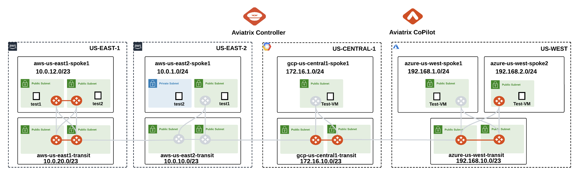
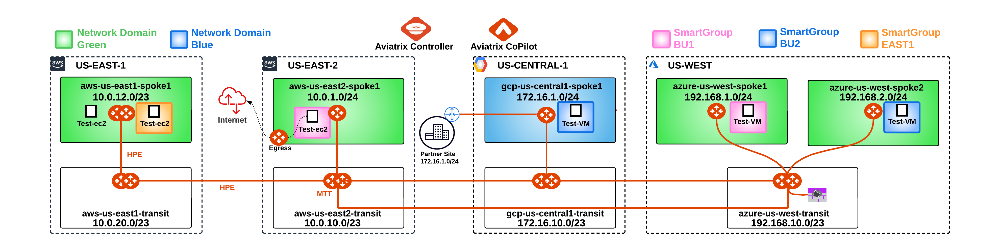

Welcome to ACE Professional Lab#
1. Preface#
These labs are intended for Aviatrix Customers, Partners, and Employees to aid in the Aviatrix solution learning process. The scope of this document is specifically to cover Aviatrix use-cases configuration steps to design and validate end-to-end Aviatrix functionality.
Unless otherwise mentioned, the lab PODs will be available until Friday afternoon US Pacific time the week of the training. In other words, the pods will be torn down on Friday afternoon.
2. Prerequisites#
You must have an
SSH clientinstalled on your PC and be comfortable using it.If you cannot SSH from your corporate laptop/desktop, please use a personal laptop/desktop in the class instead.
You may be asked to share your desktop on the Zoom call, so please be prepared.
3. Getting Started with the labs#
To access Aviatrix Multicloud Networking and Security Bootcamp labs, use one of these supported browsers:
Chrome 71 (or later)
Firefox 63 (or later)
Edge 105 (or later)
Safari 16.3 (or later)
4. Access Information#
This information is provided separately before the start of the labs inside a dedicated portal.
Aviatrix Controller
Aviatrix CoPilot
Test Instances in each cloud
Bootstrap package information for Palo Alto Firewall (VM-Series) [Lab 7]
Cisco Cloud Services Router 1000v Series (CSR) [Lab 8]
Malicious IP [Lab 9]
5. Lab Topology#
At the start of Day 1 of the class, each student will be given a POD with the following topology.
 Figure 1: Initial Topology
By the end of Day 3, each student will be able to deploy and verify the following Multicloud Topology, including the following use cases:
VPC and VNet Creation
Single Cloud Transit
Multicloud Transit
Single/Multicloud Network Segmentation
Role-Based Access Control (RBAC)
High Performance Encryption (aka Insane Mode)
ActiveMesh High Availability
Egress FQDN Filtering
FireNet
Site2Cloud with Overlapping IPs
ThreatIQ and ThreatGuard
Distributed Cloud Firewall
Multi-Tier Transit
 Figure 2: Full-Blown MCNA
Note
Throughout the labs, you will notice some additional pre-configured constructs, which will be utilised in the later labs. Please pay special attention to selecting the right region, gateway or VPC/VNet.
In particular, resources in AWS us-east-1 will not be used until Lab 5. Likewise, resources in Azure US West Spoke 2 will not be used until Lab 7.